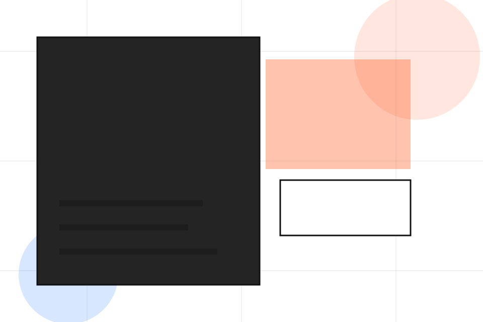
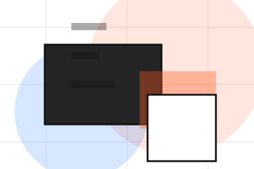
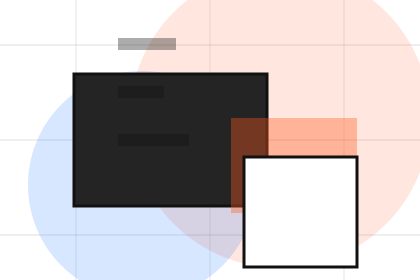
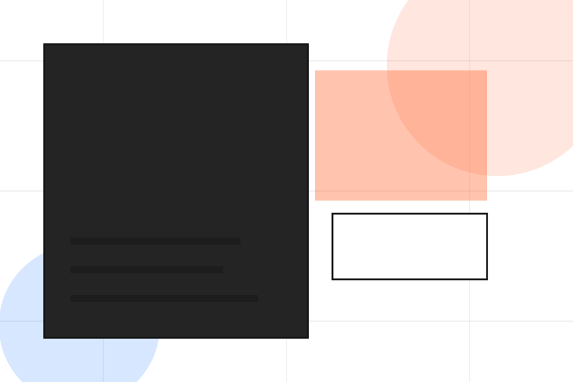
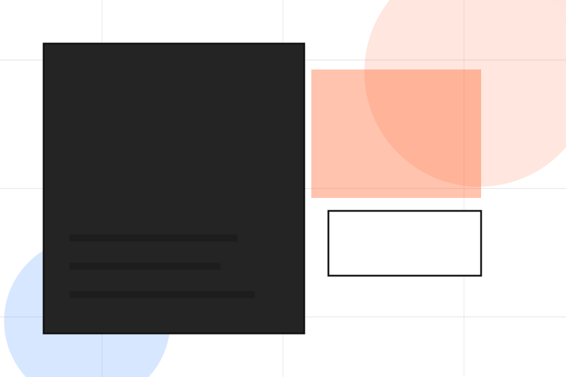
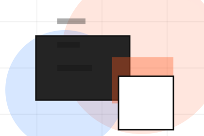
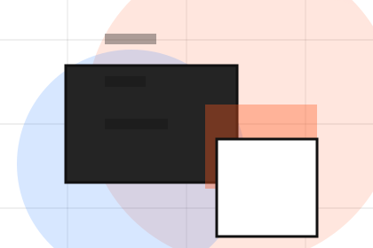
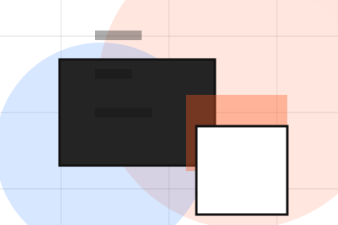
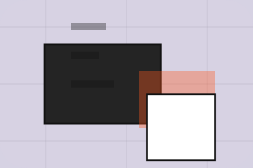

Fit
Who the offer is for, which scope it suits, and when a different route may be better.
Pricing / 01
Pricing opens as a clear consulting decision hub: what Vector offers, who it helps, why it matters, and which route to take first.
The first screen combines positioning, proof, primary action, and fast internal navigation, so people can act immediately or compare the rest of the pricing route with context.
Idea-led editorial hero
Select the closest route and Vector keeps the next step, proof, and follow-up expectation aligned with clarity, leverage and measurable progress.

Pricing / 02
Workshops makes commercial comparison easier by showing fit, scope, and terms before consulting visitors ask for the next step.
The layout keeps price-sensitive decisions honest: it separates starting scope, fuller delivery, and ongoing support so the visitor can ask a sharper question.
Explore PricingWho the offer is for, which scope it suits, and when a different route may be better.
What is included clearly enough for consulting, strategy & business advisory visitors to compare value without hidden jargon.
The practical details that should be confirmed before someone asks to send a brief.
Pricing / 03
Projects makes commercial comparison easier by showing fit, scope, and terms before consulting visitors ask for the next step.
The layout keeps price-sensitive decisions honest: it separates starting scope, fuller delivery, and ongoing support so the visitor can ask a sharper question.
Explore Pricing

Who the offer is for, which scope it suits, and when a different route may be better.


Pricing / 05
Scope makes commercial comparison easier by showing fit, scope, and terms before consulting visitors ask for the next step.
The layout keeps price-sensitive decisions honest: it separates starting scope, fuller delivery, and ongoing support so the visitor can ask a sharper question.
Explore PricingWho the offer is for, which scope it suits, and when a different route may be better.
What is included clearly enough for consulting, strategy & business advisory visitors to compare value without hidden jargon.

The practical details that should be confirmed before someone asks to send a brief.
Pricing / 06
Inclusions makes commercial comparison easier by showing fit, scope, and terms before consulting visitors ask for the next step.
The layout keeps price-sensitive decisions honest: it separates starting scope, fuller delivery, and ongoing support so the visitor can ask a sharper question.
Explore PricingWho the offer is for, which scope it suits, and when a different route may be better.
What is included clearly enough for consulting, strategy & business advisory visitors to compare value without hidden jargon.
The practical details that should be confirmed before someone asks to send a brief.
Pricing / 07
Comparison makes commercial comparison easier by showing fit, scope, and terms before consulting visitors ask for the next step.
The layout keeps price-sensitive decisions honest: it separates starting scope, fuller delivery, and ongoing support so the visitor can ask a sharper question.
Explore PricingWho the offer is for, which scope it suits, and when a different route may be better.
What is included clearly enough for consulting, strategy & business advisory visitors to compare value without hidden jargon.
The practical details that should be confirmed before someone asks to send a brief.
Pricing / 08
Fit makes commercial comparison easier by showing fit, scope, and terms before consulting visitors ask for the next step.
The layout keeps price-sensitive decisions honest: it separates starting scope, fuller delivery, and ongoing support so the visitor can ask a sharper question.
Explore PricingVector frames fit around fit, scope, and terms so visitors can compare cost without losing the outcome.
Send BriefPricing / 09
Terms makes commercial comparison easier by showing fit, scope, and terms before consulting visitors ask for the next step.
The layout keeps price-sensitive decisions honest: it separates starting scope, fuller delivery, and ongoing support so the visitor can ask a sharper question.
Explore Pricing

Who the offer is for, which scope it suits, and when a different route may be better.
Pricing / 10
Vector closes the pricing route with a clear action, a quick reminder of the value, and a low-friction way to send a brief.
Visitors who are ready can use the primary action. Visitors who are still comparing can scan the section links, proof, and support routes before they send a brief.
Send BriefThe final block keeps the choice simple: act now, compare one more proof route, or send enough detail for a focused response.
Send Briefclarity, leverage and measurable progress
A strategy studio site with large editorial type, idea-led modules, mosaic proof, and workshop conversion. Pricing ends with a direct path to send a brief, plus enough context for visitors who still need to compare.

Send BriefInformation is provided for planning and should be reviewed for the final client, location, and operating rules.